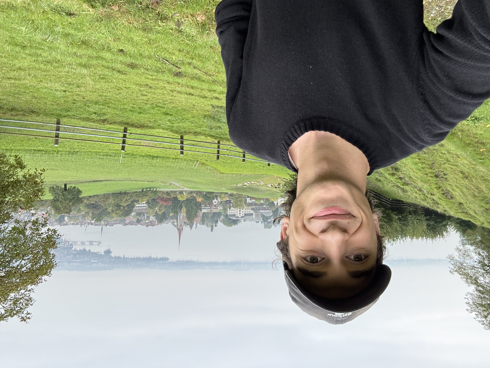

Co-founder
Mateo Mamaladze
Vision, hardware and product strategy
Mateo drives the OpenPulse vision, product direction and hardware prototyping. He connects the original frustration with closed wearables to the current B2B platform strategy and works on turning the modular puck architecture into a real product system.